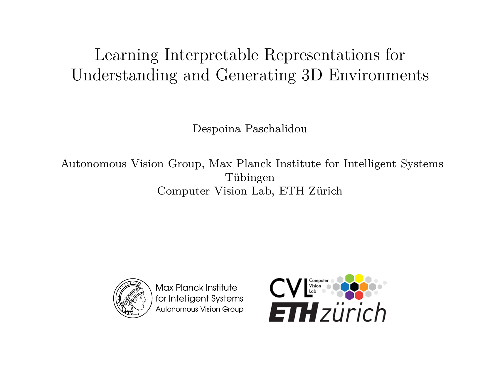
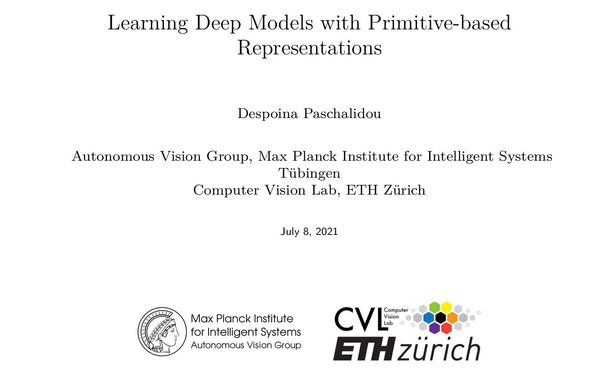
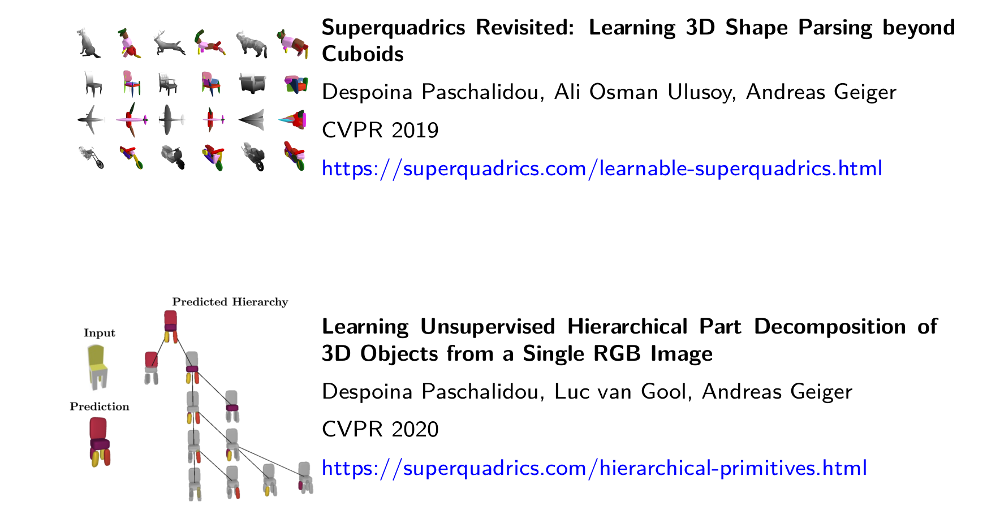

Despoina Paschalidou
Home
Publications
Presentations
2021

Learning Interpretable Representations for Understanding and Generating 3D Environments
Despoina Paschalidou
Berkeley, BAIR, July 2021
Slides
Neural Parts: Learning Expressive 3D Shape Abstractions with Invertible Neural Networks
Despoina Paschalidou
Standford, Leonidas Guibas Laboratory, April 2021
Slides
2020

Learning Deep Models with Primitive-based Representations
Despoina Paschalidou
University of Toronto and NVIDIA, October 2020
Slides

Learning Deep Models with Primitive-based Representations
Despoina Paschalidou
Standford, Leonidas Guibas Laboratory, July 2020
Slides